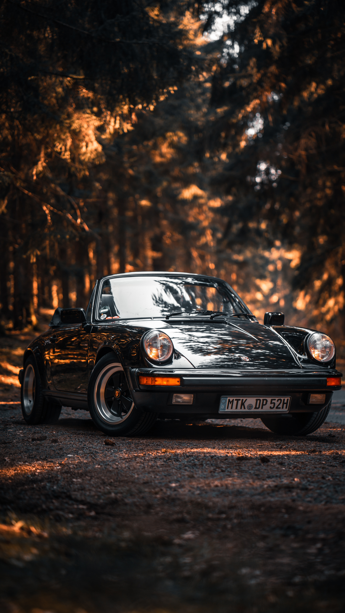
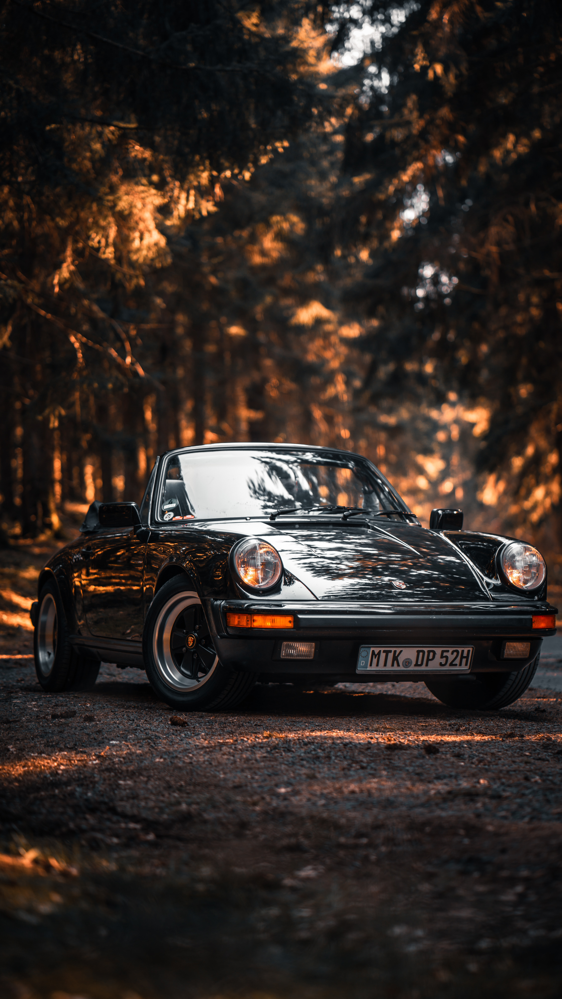
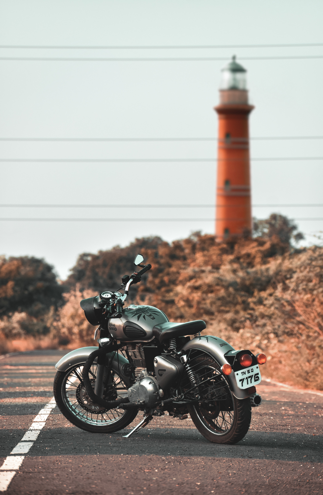
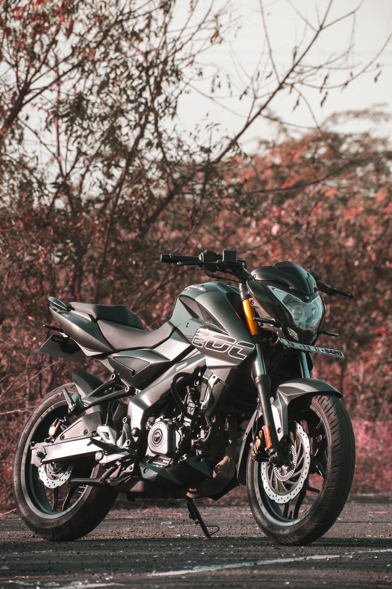
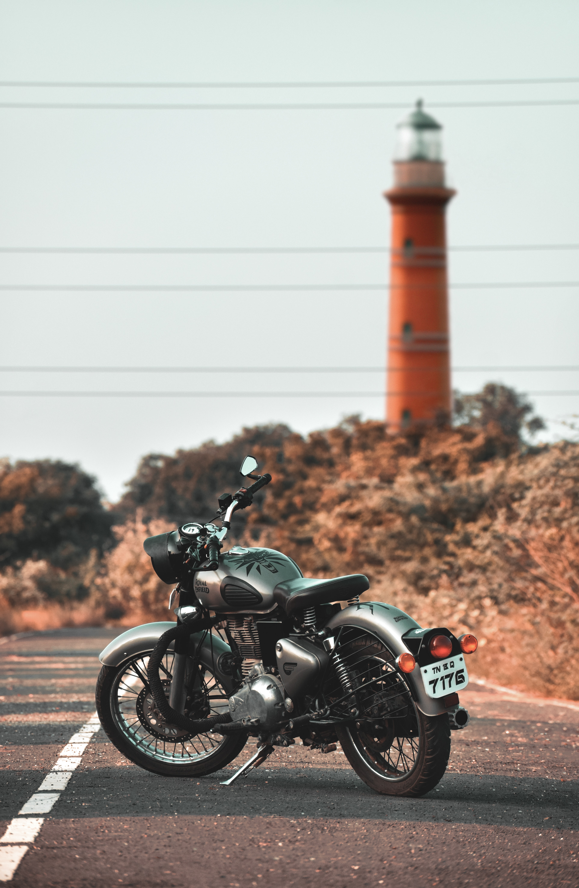
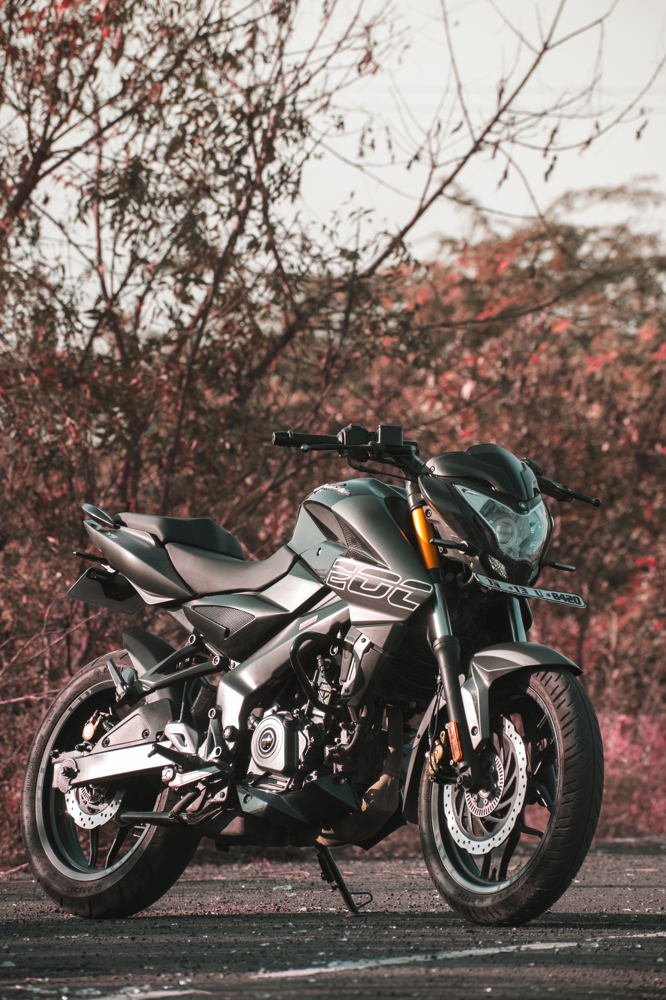

Cars
A car (or automobile) is a wheeled motor vehicle used for transportation.
Most definitions of cars say that they run primarily on roads, seat one-to-eight people,
have four wheels and mainly transport people rather than goods.[2][3]
Cars came into global use during the 20th century, and developed economies depend on them.
The year 1886 is regarded as the birth year of the car when German inventor Karl Benz patented
his Benz Patent-Motorwagen.[1][4][5] Cars became widely available in the early 20th century.
One of the first cars accessible to the masses was the 1908 Model T,
an American car manufactured by the Ford Motor Company. Cars were rapidly adopted in the US,
where they replaced animal-drawn carriages and carts.[6] In Europe and other parts of the world,
demand for automobiles did not increase until after World War II.[6]
House
A house is a single-unit residential building, which may range in complexity from a rudimentary hut to a complex structure of wood, masonry, concrete or other material, outfitted with plumbing, electrical, and heating, ventilation, and air conditioning systems.[1][2] Houses use a range of different roofing systems to keep precipitation such as rain from getting into the dwelling space. Houses may have doors or locks to secure the dwelling space and protect its inhabitants and contents from burglars or other trespassers. Most conventional modern houses in Western cultures will contain one or more bedrooms and bathrooms, a kitchen or cooking area, and a living room.
Bikes
Bicycle
A bicycle, also called a bike or cycle, is a human-powered or motor-powered, pedal-driven, single-track vehicle, having two wheels attached to a frame, one behind the other. A bicycle rider is called a cyclist, or bicyclist.
Bicycles were introduced in the 19th century in Europe, and by the early 21st century, more than 1 billion were in existence.[1][2][3] These numbers far exceed the number of cars, both in total and ranked by the number of individual models produced.[4][5][6] They are the principal means of transportation in many regions. They also provide a popular form of recreation, and have been adapted for use as children's toys, general fitness, military and police applications, courier services, bicycle racing, and bicycle stunts.
Motorcycle
A motorcycle, often called a motorbike, bike, or cycle, is a two- or three-wheeled motor vehicle.[1][2][3] Motorcycle design varies greatly to suit a range of different purposes: long-distance travel, commuting, cruising, sport (including racing), and off-road riding. Motorcycling is riding a motorcycle and being involved in other related social activity such as joining a motorcycle club and attending motorcycle rallies.


 



 


